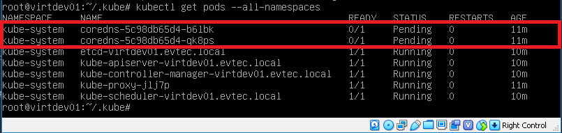
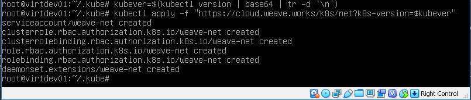

Iniciando o nó mestre
- No Master execute kubeadm init para inicializar o cluster pela primeira vez.
# kubeadm init
ou
# kubeadm init --pod-network-cidr=10.244.0.0/16 --apiserver-advertise-address=10.0.10.100 --kubernetes-version="1.21.1"
A Saida será algo como:
[init] Using Kubernetes version: v1.21.1
[preflight] Running pre-flight checks
[preflight] Pulling images required for setting up a Kubernetes cluster
[preflight] This might take a minute or two, depending on the speed of your internet connection
[preflight] You can also perform this action in beforehand using 'kubeadm config images pull'
[kubelet-start] Writing kubelet environment file with flags to file "/var/lib/kubelet/kubeadm-flags.env"
[kubelet-start] Writing kubelet configuration to file "/var/lib/kubelet/config.yaml"
[kubelet-start] Activating the kubelet service
[certs] Using certificateDir folder "/etc/kubernetes/pki"
[certs] Generating "ca" certificate and key
[certs] Generating "apiserver-kubelet-client" certificate and key
...
[bootstraptoken] configured RBAC rules to allow certificate rotation for all node client certificates in the cluster
[bootstraptoken] creating the "cluster-info" ConfigMap in the "kube-public" namespace
[addons] Applied essential addon: CoreDNS
[addons] Applied essential addon: kube-proxy
Your Kubernetes master has initialized successfully!
To start using your cluster, you need to run the following as a regular user:
mkdir -p $HOME/.kube
sudo cp -i /etc/kubernetes/admin.conf $HOME/.kube/config
sudo chown $(id -u):$(id -g) $HOME/.kube/config
You should now deploy a pod network to the cluster.
Run "kubectl apply -f [podnetwork].yaml" with one of the options listed at:
https://kubernetes.io/docs/concepts/cluster-administration/addons/
Then you can join any number of worker nodes by running the following on each as root:
kubeadm join 10.0.2.100:6443 --token d1dyaj.31zxywbg93s1ywjy --discovery-token-ca-cert-hash sha256:71a91721595fde66b6382908d801266602a14de8e16bdb7a3cede21509427009
Anote o token e a chave para usar nos nós escravos.
Para executar o kubernetes copie o arquivo admin.conf
mkdir -p $HOME/.kube
cp -i /etc/kubernetes/admin.conf $HOME/.kube/config
chown $(id -u):$(id -g) $HOME/.kube/config
Rode o comando abaixo para verificar o status do cluster
kubectl get pods --all-namespaces
A Saida deve estar assim:

Crie uma rede virtual ( namely, calico, canal, flannel, weave )
Exemplo rede flannel:
kubectl apply -f https://raw.githubusercontent.com/coreos/flannel/master/Documentation/kube-flannel.yml
Exemplo rede weave:
export kubever=$(kubectl version | base64 | tr -d '\n')
kubectl apply -f "https://cloud.weave.works/k8s/net?k8s-version=$kubever"
A saída deve ser igual a essa:

Após esse procedimento os coredns devem estar "running"
Continue para Inicializando um nó escravo